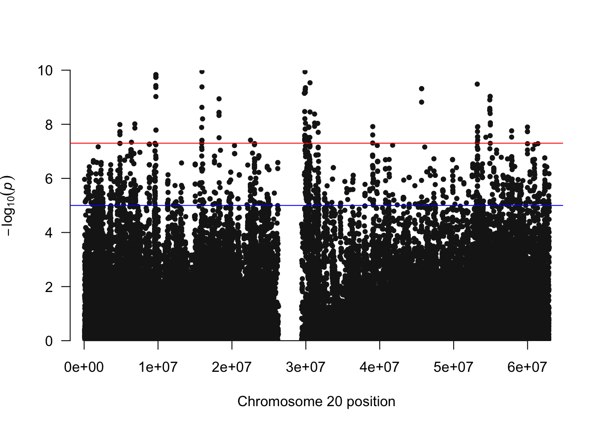
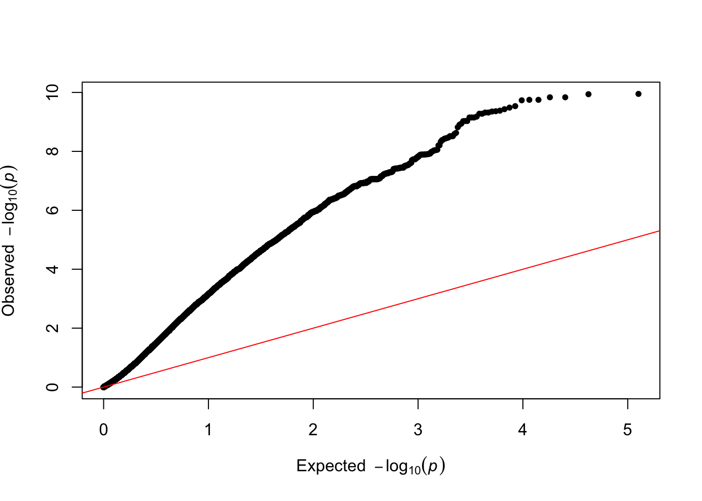
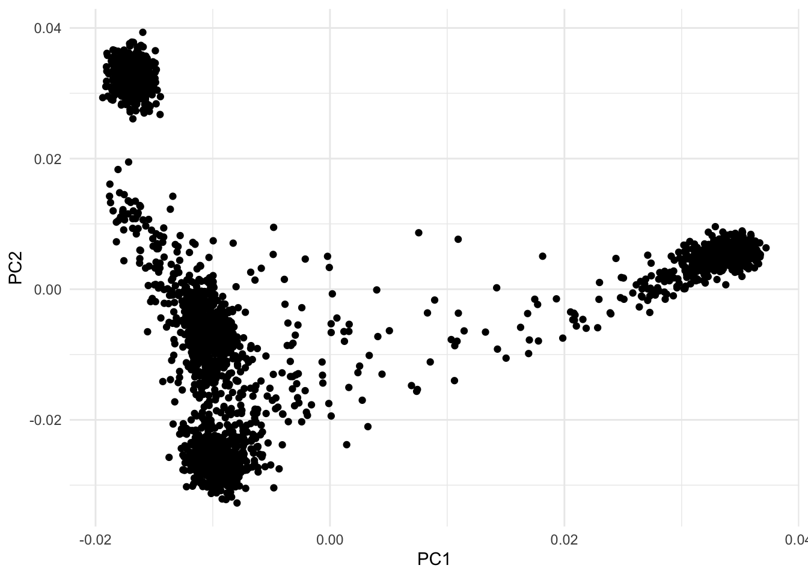
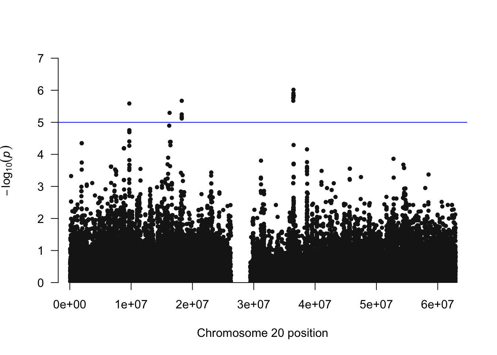
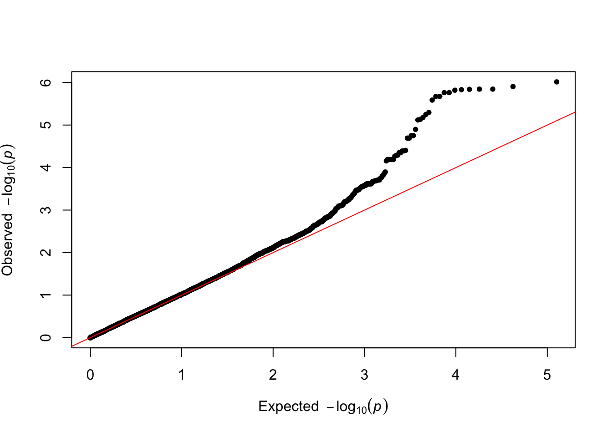

[ -f data/gwas.imputed.chr20.dose.vcf.gz ] || wget -q -P data https://genepi.i-med.ac.at/downloads/imputation/gwas.imputed.chr20.dose.vcf.gz
mkdir -p output4 GWAS
4.1 Setup
- Install PLINK2
4.2 nf-gwas
4.3 PLINK2
4.3.1 Without PCA
plink2 --vcf data/gwas.imputed.chr20.dose.vcf.gz \
--pheno data/phenotypes.txt \
--pheno-name pheno_1 \
--logistic allow-no-covars \
--out output/gwasPLINK v2.0.0-a.6.9LM 64-bit Intel (29 Jan 2025) cog-genomics.org/plink/2.0/
(C) 2005-2025 Shaun Purcell, Christopher Chang GNU General Public License v3
Logging to output/gwas.log.
Options in effect:
--glm allow-no-covars
--out output/gwas
--pheno data/phenotypes.txt
--pheno-name pheno_1
--vcf data/gwas.imputed.chr20.dose.vcf.gz
Start time: Sat Oct 4 11:11:19 2025
15995 MiB RAM detected, ~14911 available; reserving 7997 MiB for main
workspace.
Using up to 4 compute threads.
--vcf: 1k variants scanned.
--vcf: 2k variants scanned.
--vcf: 3k variants scanned.
--vcf: 4k variants scanned.
--vcf: 5k variants scanned.
--vcf: 6k variants scanned.
--vcf: 7k variants scanned.
--vcf: 8k variants scanned.
--vcf: 9k variants scanned.
--vcf: 10k variants scanned.
--vcf: 11k variants scanned.
--vcf: 12k variants scanned.
--vcf: 13k variants scanned.
--vcf: 14k variants scanned.
--vcf: 15k variants scanned.
--vcf: 16k variants scanned.
--vcf: 17k variants scanned.
--vcf: 18k variants scanned.
--vcf: 19k variants scanned.
--vcf: 20k variants scanned.
--vcf: 21k variants scanned.
--vcf: 22k variants scanned.
--vcf: 23k variants scanned.
--vcf: 24k variants scanned.
--vcf: 25k variants scanned.
--vcf: 26k variants scanned.
--vcf: 27k variants scanned.
--vcf: 28k variants scanned.
--vcf: 29k variants scanned.
--vcf: 30k variants scanned.
--vcf: 31k variants scanned.
--vcf: 32k variants scanned.
--vcf: 33k variants scanned.
--vcf: 34k variants scanned.
--vcf: 35k variants scanned.
--vcf: 36k variants scanned.
--vcf: 37k variants scanned.
--vcf: 38k variants scanned.
--vcf: 39k variants scanned.
--vcf: 40k variants scanned.
--vcf: 41k variants scanned.
--vcf: 42k variants scanned.
--vcf: 43k variants scanned.
--vcf: 44k variants scanned.
--vcf: 45k variants scanned.
--vcf: 46k variants scanned.
--vcf: 47k variants scanned.
--vcf: 48k variants scanned.
--vcf: 49k variants scanned.
--vcf: 50k variants scanned.
--vcf: 51k variants scanned.
--vcf: 52k variants scanned.
--vcf: 53k variants scanned.
--vcf: 54k variants scanned.
--vcf: 55k variants scanned.
--vcf: 56k variants scanned.
--vcf: 57k variants scanned.
--vcf: 58k variants scanned.
--vcf: 59k variants scanned.
--vcf: 60k variants scanned.
--vcf: 61k variants scanned.
--vcf: 62k variants scanned.
--vcf: 63k variants scanned.
--vcf: 63402 variants scanned.
--vcf: 31k variants converted.
--vcf: output/gwas-temporary.pgen + output/gwas-temporary.pvar.zst +
output/gwas-temporary.psam written.
2504 samples (0 females, 0 males, 2504 ambiguous; 2504 founders) loaded from
output/gwas-temporary.psam.
63402 variants loaded from output/gwas-temporary.pvar.zst.
1 binary phenotype loaded (126 cases, 2378 controls).
Calculating allele frequencies... 0%done.
--glm logistic-Firth hybrid regression on phenotype 'pheno_1': 0%done.
Results written to output/gwas.pheno_1.glm.logistic.hybrid .
End time: Sat Oct 4 11:11:30 2025library(qqman)For example usage please run: vignette('qqman')Citation appreciated but not required:Turner, (2018). qqman: an R package for visualizing GWAS results using Q-Q and manhattan plots. Journal of Open Source Software, 3(25), 731, https://doi.org/10.21105/joss.00731.pheno_1 <- read.table("output/gwas.pheno_1.glm.logistic.hybrid", header=TRUE, comment.char="")
pheno_1 <- pheno_1[!is.na(pheno_1$P), ]
manhattan(x = pheno_1, chr = "X.CHROM", bp = "POS", p = "P", snp="ID")
qq(pheno_1$P)
4.3.2 PCA
library(ggplot2)
pca_data <- read.table("data/covariates.txt", header=TRUE, comment.char="")
#phenotypes <- read.table("data/phenotypes.txt", header=TRUE, comment.char="")
# merge pca data with phenotypes by column IID
#phenotypes <- merge(pca_data, phenotypes, by = "IID")
#ggplot(phenotypes, aes(x = PC1, y = PC2, color = super_pop)) + geom_point()
ggplot(pca_data, aes(x = PC1, y = PC2)) + geom_point() + theme_minimal()
4.3.3 With PCA
plink2 --vcf data/gwas.imputed.chr20.dose.vcf.gz \
--pheno data/phenotypes.txt \
--pheno-name pheno_1 \
--covar data/covariates.txt \
--logistic hide-covar \
--out output/gwas.covarPLINK v2.0.0-a.6.9LM 64-bit Intel (29 Jan 2025) cog-genomics.org/plink/2.0/
(C) 2005-2025 Shaun Purcell, Christopher Chang GNU General Public License v3
Logging to output/gwas.covar.log.
Options in effect:
--covar data/covariates.txt
--glm hide-covar
--out output/gwas.covar
--pheno data/phenotypes.txt
--pheno-name pheno_1
--vcf data/gwas.imputed.chr20.dose.vcf.gz
Start time: Sat Oct 4 11:11:37 2025
15995 MiB RAM detected, ~14797 available; reserving 7997 MiB for main
workspace.
Using up to 4 compute threads.
--vcf: 1k variants scanned.
--vcf: 2k variants scanned.
--vcf: 3k variants scanned.
--vcf: 4k variants scanned.
--vcf: 5k variants scanned.
--vcf: 6k variants scanned.
--vcf: 7k variants scanned.
--vcf: 8k variants scanned.
--vcf: 9k variants scanned.
--vcf: 10k variants scanned.
--vcf: 11k variants scanned.
--vcf: 12k variants scanned.
--vcf: 13k variants scanned.
--vcf: 14k variants scanned.
--vcf: 15k variants scanned.
--vcf: 16k variants scanned.
--vcf: 17k variants scanned.
--vcf: 18k variants scanned.
--vcf: 19k variants scanned.
--vcf: 20k variants scanned.
--vcf: 21k variants scanned.
--vcf: 22k variants scanned.
--vcf: 23k variants scanned.
--vcf: 24k variants scanned.
--vcf: 25k variants scanned.
--vcf: 26k variants scanned.
--vcf: 27k variants scanned.
--vcf: 28k variants scanned.
--vcf: 29k variants scanned.
--vcf: 30k variants scanned.
--vcf: 31k variants scanned.
--vcf: 32k variants scanned.
--vcf: 33k variants scanned.
--vcf: 34k variants scanned.
--vcf: 35k variants scanned.
--vcf: 36k variants scanned.
--vcf: 37k variants scanned.
--vcf: 38k variants scanned.
--vcf: 39k variants scanned.
--vcf: 40k variants scanned.
--vcf: 41k variants scanned.
--vcf: 42k variants scanned.
--vcf: 43k variants scanned.
--vcf: 44k variants scanned.
--vcf: 45k variants scanned.
--vcf: 46k variants scanned.
--vcf: 47k variants scanned.
--vcf: 48k variants scanned.
--vcf: 49k variants scanned.
--vcf: 50k variants scanned.
--vcf: 51k variants scanned.
--vcf: 52k variants scanned.
--vcf: 53k variants scanned.
--vcf: 54k variants scanned.
--vcf: 55k variants scanned.
--vcf: 56k variants scanned.
--vcf: 57k variants scanned.
--vcf: 58k variants scanned.
--vcf: 59k variants scanned.
--vcf: 60k variants scanned.
--vcf: 61k variants scanned.
--vcf: 62k variants scanned.
--vcf: 63k variants scanned.
--vcf: 63402 variants scanned.
--vcf: 31k variants converted.
--vcf: output/gwas.covar-temporary.pgen + output/gwas.covar-temporary.pvar.zst
+ output/gwas.covar-temporary.psam written.
2504 samples (0 females, 0 males, 2504 ambiguous; 2504 founders) loaded from
output/gwas.covar-temporary.psam.
63402 variants loaded from output/gwas.covar-temporary.pvar.zst.
1 binary phenotype loaded (126 cases, 2378 controls).
10 covariates loaded from data/covariates.txt.
Calculating allele frequencies... 0%done.
--glm logistic-Firth hybrid regression on phenotype 'pheno_1': 0%done.
Results written to output/gwas.covar.pheno_1.glm.logistic.hybrid .
End time: Sat Oct 4 11:11:57 2025pheno_1 <- read.table("output/gwas.covar.pheno_1.glm.logistic.hybrid", header=TRUE, comment.char="")
pheno_1 <- pheno_1[!is.na(pheno_1$P), ]
manhattan(x = pheno_1, chr = "X.CHROM", bp = "POS", p = "P", snp="ID")
qq(pheno_1$P)